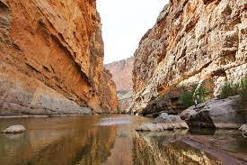

I started hiking in high school, and immediately fell in love. It is such a fun and calming way to excercise. It's a great (and cheap) way to see beautiful places! It's always easy to find beautiful scenery when out on a hike! Though, in my opinion the best part is getting to the scenery. When I'm on a trail by myself, it's the best way to ease my anxiety. When I finally get to the end of the trail, I like to stay there for a while and just look out over the scenery, taking it all in. Sometimes I bring a yoga mat to make it even more tranquil. This is especially helpful if there's a body of water, such as a river or ocean, nearby. The sound of water is so calming to me!
Traveling to new destinations is always such a thrilling experience. Exploring just makes life better! I love beaches, mountains, forests, cities, everything! As I mentioned in Hiking, running water is very calming to me, so anywhere that has water is an automatic 'must vist' for me! I also want to visit every National Park in the country! I've already visited a few, the one I've visited most frequently has been New River Gorge National Park(pictured above), being in my home state of West Virginia! If you've never been, I highly reccomend! Alongside New River Gorge, I've been to a couple National Parks in Virginia. I've camped near Virginia National Parks quite a bit! Camping is one of my favorite summer activities! It's such a fun way to be in nature! I hope one day to live out of a camper van so that I can camp more often!!!

When I was 14, I started swimming regularly. It was a great way to spend time after school while waiting for my dad to get off work. I could, and still do, spend hours swimming without getting tired. Being in the water makes me so happy. One of my biggest dreams in life is to have my own pool, large enough to properly swim laps. Though I feel I might end up spending all my time in the pool!
Baked goods make everybody happy! To me, I think the best part is everything that goes into them. Baking is an exact science. You have to measure out everything precisely so you don't get the wrong ratio. Even a couple extra ounces of an ingredient can completely throw off a recipe. Extra flour can make bread dough fall apart, or cake batter too thick and grainy. It's a great way to get my focus off of something that's stressing me out. For example, during this project I got a little overwhelmed so I baked some bread! Now, I have bread and less stress, and was able to get back to my prework!
One of my favorite things to do when I'm having a lazy day, or just need a break from whatever is troubling me, is to get on my computer and bury myself in a game. I'm the kind of person who could spend hours just playing video games. My favorite of all time has to be Dishonored. It's a game about the plague, during which the main character has powers and has to fight people trying to take over the kingdom. It's a really fun and challenging game! I plan to get a tattoo from it on my left hand eventually!
Music just about owns my life. It helps me focus, helps me calm down, etc. I like just about every genre, from pop, to rap, all the way to metalcore. Concerts and festivals make it even better! I love them so much! Just a loud space dedicated to being around other folks who like the same things as you, who think similarly to you. It's just awesome! They're such invigorating experiences! I honestly think music is one of the best things in life. My favorite band at the moment is one called I Prevail, but my all time favorite is Crown The Empire. I even have a tattoo on my arm of one of their lyrics, "My scars are closing, my heart is open."